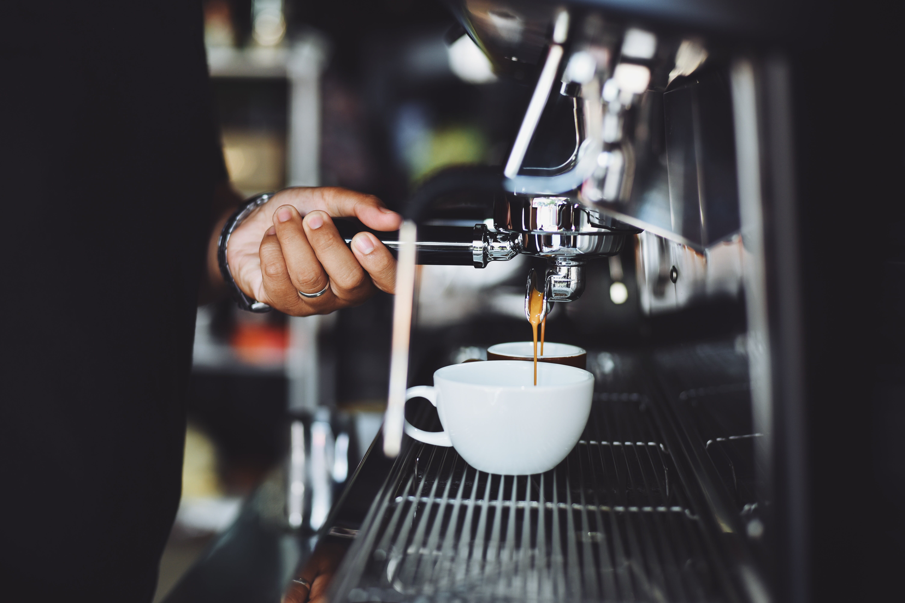
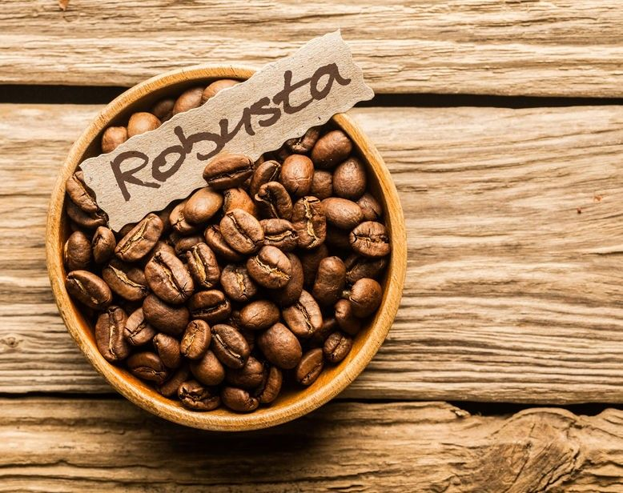
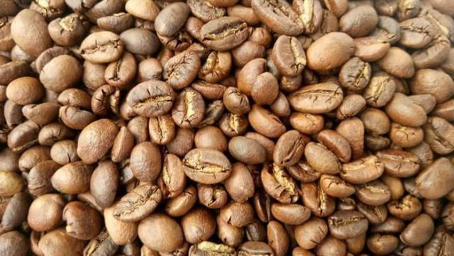

This is a website for
coffee lovers in Philippines
Espresso is a concentrated type of coffee made with specially roasted beans and an espresso machine. Finely ground beans are packed into a portafilter, which is then locked into the base of the espresso machine. Very high pressure forces water through the packed grounds to pull one- or two-ounce shots of creamy, thick espresso.
Robusta coffee is a type of coffee made from the beans of the Coffea canephora plant. It is the second most popular coffee in the world, accounting for around 40% of all coffee sold. The plant is grown in tropical conditions on either side of the equator and is part of the botanical family Rubiaceae.
Like Liberica, Excelsa coffee originated in Africa but is now found almost exclusively in South East Asia. Excelsa and Liberica might be considered the same coffee or different crops, depending on the country. The key producing countries of Excelsa are Vietnam, the Philippines, India, Malaysia, and Indonesia
